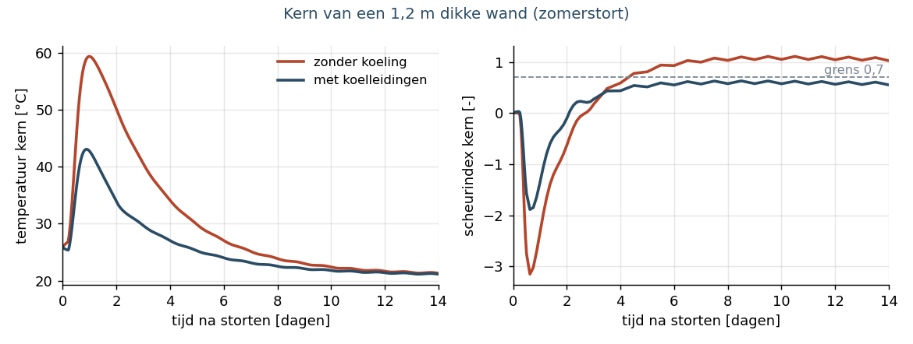
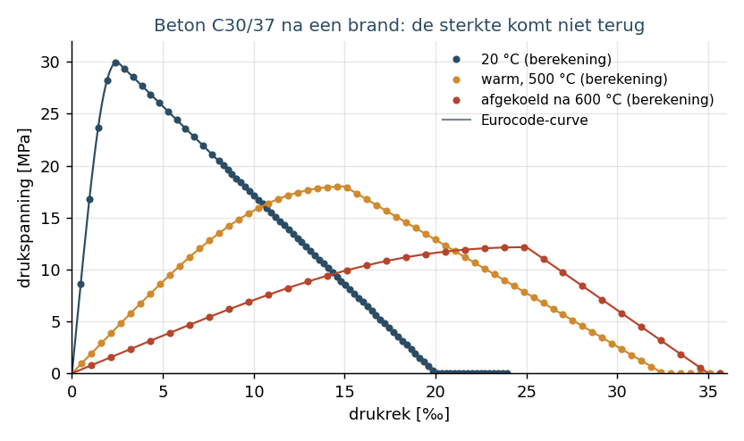

Massief beton zonder verrassingen, constructies die een brand doorstaan
Twee vragen komen vaak terug bij grotere betonwerken en gebouwen. Scheurt een dikke wand terwijl hij verhardt? En hoe lang blijft een constructie overeind in een brand? Voor beide hebben we een eigen, volledig gedocumenteerde rekenketen opgebouwd op basis van een open-source eindige-elementenpakket, en gecontroleerd tegen de Eurocodes, onafhankelijke referentieberekeningen en analytische oplossingen.
Jong beton: warmte, koeling en scheuren
Bij het verharden komt veel warmte vrij. In een wand van 1,2 m loopt de kern zonder koeling op tot ongeveer 60 °C, terwijl de randen en de oudere vloer eronder kouder blijven. Die verhindering geeft trekspanningen, en daarmee mogelijk scheuren die de waterdichtheid en de duurzaamheid aantasten.
Wij berekenen het temperatuurverloop per seizoen, met of zonder koelleidingen, de verharding, krimp en kruip volgens Eurocode 2, de scheurkans en – met expliciete scheurmodellen – de scheurwijdte. Voor een tunnelwand uit de praktijk liggen onze temperaturen binnen 1 à 2 °C van een onafhankelijke referentieberekening, met hetzelfde besluit over de koelnood.
- Koelen werkt: zonder koeling loopt de kern van een zomerstort op tot 61 °C en stijgt de scheurindex in de kern tot 1,1 (scheuren verwacht); met koelleidingen blijft de kern op 49 °C en de index op 0,63, onder de grens van 0,7 (zie figuur).
- Scheurwijdte: met de verhinderingsgraad uit de berekening en Eurocode 2 deel 3 (bijlage M) volgt voor de onderzochte wapening een scheurwijdte van ongeveer 0,07 mm. Expliciete scheurmodellen berekenen daarnaast de scheuren zelf: aantal, plaats en opening.
- Kalibratie op werfmetingen: met twee thermokoppels (kern en bekisting) vinden we de warmteontwikkeling, de snelheid ervan en de warmte-uitwisseling terug tot op minder dan 1 %, ook met meetruis.
- Treksterkte: proeven op een tunnelbeton toonden dat de vroege treksterkte ruim boven de Eurocodewaarde ligt (na 1 dag het dubbele, na 7 dagen anderhalve keer). Rekenen met gemeten waarden geeft een realistischer scheurrisico.

Brand: verder dan de tabellen
Naast tabellen laten de Eurocodes geavanceerde rekenmethoden toe: de opwarming van de doorsneden en het mechanisch gedrag tot bezwijken, met temperatuurafhankelijke materiaalwetten. Dat loont bij bestaande gebouwen met weinig betondekking, bij bijzondere vormen en bij natuurlijke-brandscenario's.
- Opwarming gecontroleerd: de temperaturen in beton- en staaldoorsneden volgen de referentieoplossingen van de Eurocodes tot op 1 à 5 °C.
- Stalen liggers: het berekende bezwijken ligt binnen 5 °C van de analytische kritieke temperatuur. Stalen kolommen met knik volgen de kniktheorie met de temperatuurafhankelijke staalwet.
- Validatievoorbeelden van de Duitse nationale bijlage (DIN EN 1991-1-2/NA, bijlage CC): voor de kragkolom liggen bezwijktijd (97 tegen 93 minuten), kopverplaatsing en voetmoment binnen de toleranties, net als de wapening van de zwak gewapende balk (4 % onder de referentie). Voor de sterk gewapende balk vinden we 12,5 % minder wapening: de staaltemperaturen van de referentie liggen hoger dan in elke herberekening, ook in gepubliceerde validaties van andere software. Met de referentietemperaturen is het verschil 6 %, binnen de tolerantie van 10 %.
- Betonplaat bij ISO-brand: de geavanceerde berekening geeft 169 minuten brandweerstand, tegenover 144 minuten met de vereenvoudigde methode. Bij bestaande gebouwen kan dat verschil een renovatie besparen.
- Afkoelfase van een natuurlijke brand: beton herwint zijn sterkte niet. Met een materiaalwet volgens de nieuwe Eurocode (FprEN 1992-1-2:2023) rekenen we ook door wat er na de brand gebeurt. Een kolom belast op 70 % van haar koude draagvermogen doorstaat de opwarming, maar bezwijkt een uur na de piek van de brand, terwijl het vuur al uitdooft. Bij 60 % blijft ze staan, met nog twee derde van haar oorspronkelijke draagvermogen. Een onafhankelijke controleberekening geeft dezelfde tijden.

Wat betekent dit voor uw project?
- Massief beton (kelders, tunnels, keermuren, funderingsplaten): koelnood, stortfasering en wapening tegen scheuren onderbouwd in plaats van geschat.
- Brandveiligheid: prestatiegerichte controle van bestaande constructies bij renovatie of herbestemming, en onafhankelijk nazicht van berekeningen van derden.
- Transparant: elke stap is gedocumenteerd en gecontroleerd tegen een onafhankelijke referentie. Elke projecttoepassing krijgt projectspecifieke invoer en een eigen controle.
Vragen over een concreet project? Mail naar info@easuys.be.